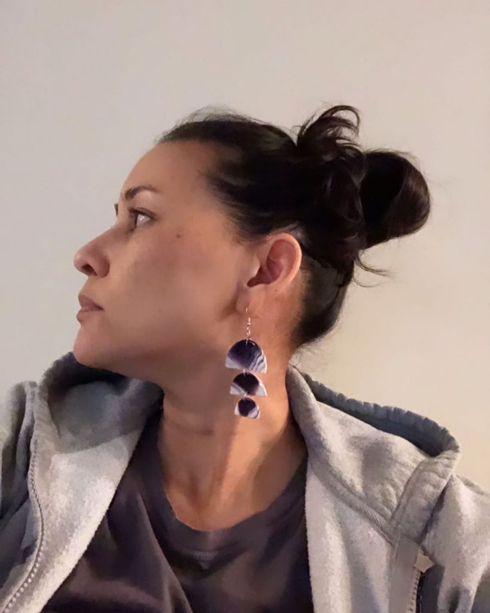
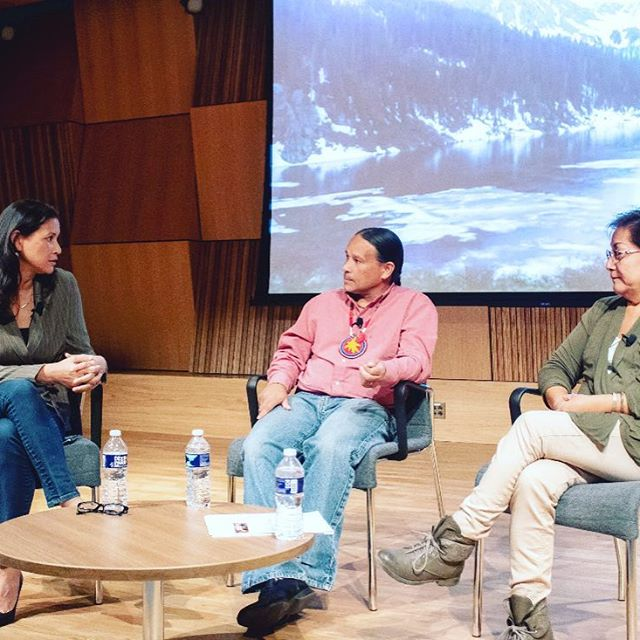

PACC

Introduction
Stories build worlds, and worlds live through stories.
This collaborative project explores the persistence of multiple stories–beginning with the original, Indigenous stories of this land and including many more–and the complex, conflicting worlds that they create and re-create with ongoing iteration. We will examine specific narratives that are close to home, on Haverford campus and in Philadelphia; as well as those that reveal the “universal,” across time and place; and the deeply personal. Events include workshops on oral history, Indigenous consultation, and land acknowledgment; and presentations by Indigenous contemporary artists and performers, including a staged reading of Beth Piatote’s play AntÃkoni. Through these programs, we aim to uncover how Indigenous and settler-colonial subjects narrate their relations to other beings and to place; the meanings and possibilities of persistence; and how to ethically respond to the multiplicity of stories that live in the land, and with us, and inside us.
Collaborators


Events
We Are the Seeds: Tailinh Agoyo, Executive Director
Non-Profit Partner
1.21~
The Philadelphia Building, 1315 Walnut Street, Suite 320, Philadelphia
An excerpt from the We Are the Seeds Santa Fe 2019 welcome letter:
​
At Seeds, our intention is to create programs that uplift and center Indigenous voices. The time has come where we, as Indigenous people need to share our own stories, in our own ways. It is imperative for our survival. Seeds is committed to providing that opportunity whether it’s here in Santa Fe, through our programs in Philadelphia, or at the dinner table with our families.
It’s been a long road to get to this place and we are just beginning. As Indigenous women and mothers, we have a visceral approach to our work. Yes, we have strategies, business plans, and a support team that we are so thankful for, but the truth is, experience, too many challenges, and age have given us gifts that surpass any of those things. Seeds is for our people. Seeds is for our children. Seeds is for the future. And today, we share all of what we have with you. We want you to experience the joy we feel, the beauty we have understood since the beginning of time, and the depth of emotion with which we walk through this world. Celebrate, share, engage, learn, laugh, eat, sing, play, dance, feel. This is our wish for you. This is our wish for us. Together.
Tailinh + Paula
Beth Piatote, Lead Artist
Artist in Residence
1.21~

Beth Piatote is an associate professor of Native American studies at the University of California, Berkeley. She holds a PhD from Stanford University, is the author of numerous scholarly essays and creative works, and is the recipient of multiple awards and fellowships.
Her most recent publication ‘The Beadworkers Stories’ was published in October 2019:
“Beth Piatote’s luminous debut collection opens with a feast, grounding its stories in the landscapes and lifeworlds of the Native Northwest, exploring the inventive and unforgettable pattern of Native American life in the contemporary world
Told with humor, subtlety, and spareness, the mixed-genre works of Beth Piatote’s first collection find unifying themes in the strength of kinship, the pulse of longing, and the language of return.
A woman teaches her niece to make a pair of beaded earrings while ruminating on a fractured relationship. An eleven-year-old girl narrates the unfolding of the Fish Wars in the 1960s as her family is propelled to its front lines. In 1890, as tensions escalate at Wounded Knee, two young men at college―one French and the other Lakota―each contemplate a death in the family. In the final, haunting piece, a Nez Perce–Cayuse family is torn apart as they debate the fate of ancestral remains in a moving revision of the Greek tragedy Antigone.
Formally inventive and filled with vibrant characters, The Beadworkers draws on Indigenous aesthetics and forms to offer a powerful, sustaining vision of Native life.”
​
Decolonial Theory course visit w/ Tailinh Agoyo
Course Visit
2.12
9-9:45am, Haverford College

Executive Director of We Are the Seeds, Tailinh Agoyo, will share her work designing, overseeing, and building the non-profit organization with Joshua Ramey’s Course “Decolonial Theory”.
​
Anthropology of Human Rights course visit w/ Tailinh Agoyo
Course Visit
2.6
10-10:45am, Haverford College

Executive Director of We Are the Seeds, Tailinh Agoyo, will share her work designing, overseeing, and building the non-profit organization with Brie Gettleson’s Course “Anthropology of Human Rights”.
​
Maps and Apps: Indigenous DC w/ Elizabeth Rule, Assistant Director of the AT&T Center for Indigenous Politics and Policy
Public Talk & Virtual Tour
2.24
6-7:30pm, Haverford College, VCAM Screening Room 001

Join American University Postdoctoral Fellow and Assistant Director of the AT&T Center for Indigenous Politics and Policy Dr. Elizabeth Rule (Chickasaw Nation) to go behind the scenes of her new mobile application, Guide to Indigenous DC. Through community collaboration, this mapping project highlights sites of Indigenous importance, demonstrating how the nation’s capital is, and always has been, Native land.
This event is free and open to the public.
Elizabeth Rule, Ph.D. is an enrolled citizen of the Chickasaw Nation. She serves as the Assistant Director of the AT&T Center for Indigenous Politics and Policy, Director of the Semester in Washington Politics Program, and Faculty in Residence at the George Washington University. She is also a Postdoctoral Fellow in American Studies and the Critical Race, Gender, and Culture Studies Collaborative at American University.
Before relocating to Washington, DC, Rule was a Visiting Scholar in Anthropology at the Massachusetts Institute of Technology. She received her Ph.D. and MA both in American Studies from Brown University, and her B.A. from Yale University.
Her work has appeared in American Quarterly and the American Indian Culture and Research Journal, and her research has been featured in the Washington Post, Matter of Fact with Soledad O’Brien, The Atlantic, and NPR. Rule has received support from the Ford Foundation, Holisso: The Center for the Study of Chickasaw History and Culture, the American Indian College Fund, and the Andrew W. Mellon Foundation.
Her book manuscript, Reproducing Resistance: Gendered Violence and Indigenous Nationhood, explores the intersection of Native American/First Nations women’s reproductive justice issues and gender violence.
​
In Class Storytelling Workshop w/ Beth Piatote, Lead PACC Artist & Associate Professor of Native American Studies
Workshops
3.3 & 3.4
Haverford College
Beth Piatote will lead two separate storytelling workshops referencing her short story “Beading Lesson” and “Our (Someone Else’s) Father”. She will work with Joshua Ramey’s course “Decolonial Theory” and Brie Gettleson’s course “Anthropology of Human Rights”.
Read lessAnna Tsouhlarakis, Lead Artist
Artist in Residence
3.2 - 3.5
PACC Artist-in-Residence Anna Tsouhlarakis works in sculpture, installation, performance, and video. Using the historical relationship between Quakers and Native Americans as a starting point, in collaboration with Haverford Special Collections, Tsouhlarakis will create a multi-media installation on campus, “Known Paths,” that highlights past and present moments of tension and resolve.
She will be working on campus from March 2nd through March 5th. Her first two days will be used for site-specific research and the production of a new video-based artwork, which she plans to display in a pop-up installation on Haverford’s campus. Look out for an upcoming Facebook event with more details about this installation!
If you would like to meet with Anna while she is here, please let me know, I am happy to connect you or your students via email
//////////////
Anna Tsouhlarakis works in sculpture, installation, video, and performance. She is interested in challenging and redefining the boundaries of aesthetic and conceptual expectations within Native American art. It is her goal to make work that speaks to and from Natives and create dialogues that utilize unexpected vehicles to help grow the trajectory of Native American art.
Tsouhlarakis is of Greek descent and an enrolled member of the Navajo Nation.
Tsouhlarakis received her BA from Dartmouth College with degrees in Native American Studies and Studio Art. She went on to receive her MFA from Yale University with a focus in Sculpture.
Tsouhlarakis has participated in various art residencies including Skowhegan School of Painting and Sculpture, Yaddo, and was the Andrew W. Mellon Artist-in-Residence at Colorado College for the 2019-2020 academic year. Her work has been part of national and international exhibitions at venues such as Rush Arts in New York, the Art Gallery of Ontario in Toronto, Art Mur in Montreal, the Nasher Museum of Art at Duke University, Crystal Bridges Museum, the Museum of Contemporary Native Arts, the Heard Museum, and the Smithsonian’s National Museum of the American Indian. In 2011, she was a recipient of the Eiteljorg Fellowship for Native American Fine Art. Her recent awards include fellowships from the Harpo Foundation, the DC Commission on the Arts and Humanities, and the Native Arts and Cultures Foundation. Tsouhlarakis’s work appears in several anthologies of Native American art including the recently published Art for a New Understanding: Native Voices from 1950 to Now. The book accompanies the exhibition which is “the first exhibition to chart the development of contemporary Indigenous art in the United States and Canada”.
Read lessOpen Lunch w/ Anna Tsouhlarakis, Lead Artist
Open Lunch
3.3
12-1pm, VCAM, Haverford College

Please join us for an Open Lunch with the artist on Tuesday, March 3rd, from 12-1 pm in the VCAM Community Kitchen and Presentation Lounge. Lunch will be provided. She will be working on campus from March 2nd through March 5th. Her first two days will be used for site-specific research and the production of a new video-based artwork, which she plans to display in a pop-up installation on Haverford’s campus.
PACC Artist-in-Residence Anna Tsouhlarakis works in sculpture, installation, performance, and video. Using the historical relationship between Quakers and Native Americans as a starting point, in collaboration with Haverford Special Collections, Tsouhlarakis will create a multi-media installation on campus, “Known Paths,” that highlights past and present moments of tension and resolve.
Read lessAkomawt Land Acknowledgement Workshop
Workshop
3.23
4:30-6pm, Haverford College

What is a land acknowledgment statement? Why are these statements publicly delivered in some spaces and not others? Are these statements purely performative and thus, problematic?
In this workshop, Akoawt Educational Initiative co-founders Chris Newell (Passamaquoddy) and endawnis Spears (Diné/ Ojibwe/ Chickasaw/ Choctaw) will give context to the practice of land acknowledgment statements and how the processes of crafting and using one can be a catalyst for greater change. Identifying actionable steps an institution or organization can take to create cultures of equity is vital to real and sustainable change. Akomawt educators will facilitate an interactive workshop about these necessary changes, best practices, and resources for implementing a land acknowledgment statement that reflects the ongoing work towards making right relations with contemporary Indigenous communities.
This event is free and open to the public. In addition to the workshop at 4:30, there will be an open lunch with endawnis Spears and Chris Newell at 12-1pm.
endawnis Spears (Diné/ Ojibwe/ Chickasaw/ Choctaw) is impassioned about the diverse and complex intersections of Native American narratives and museums. She received her Bachelor of Arts degree in Anthropology from the University of Denver and will complete her Master’s degree also in Anthropology from the University of Massachusetts Amherst next year. endawnis has worked for the Heard Museum, the Museum of Northern Arizona, the Mashantucket Pequot Museum and Research Center, the Muscogee Creek Nation of Oklahoma, the Narragansett Indian Tribe and was a Peabody Essex Museum Native American Arts and Culture Fellow. In late 2019, she was elected to the Federation of State Humanities Councils’ Board of Directors. The federation is a national organization partnering all state humanities councils and supporting grassroots humanities programming in every state and territory. She is the Director of Outreach and Programming and founding member of the Akomawt Educational Initiative, an Indigenous education support service and interpretive consultancy. Originally from Camp Verde, Arizona, she lives in Rhode Island with her husband Cassius Spears Jr., and their four children, Nizhoni, Sowaniu, Giizhig, and Tishominko.
Chris Newell (Passamaquoddy) is a lifetime educator. He was born and raised in Motahkmikuhk (Indian Township, ME) and a proud citizen of the Passamaquoddy Tribe at Indian Township. Chris’s education career began immediately after high school as a substitute teacher during his time as an undergraduate at Dartmouth College. He’s a long time member of the Mystic River singers, an internationally acclaimed and award winning intertribal pow wow drum group based out of Connecticut. For over two decades, Chris devoted much of his time to Mystic River travelling all over the US and Canada singing at community pow wows and spending time in those communities learning various Native musics. Chris earned an interdisciplinary Bachelor of General Studies degree from the University of Connecticut which propelled him back to educating as a profession. He served for six years as the Education Supervisor for the Mashantucket Pequot Museum and Research Center where his team has led the group experience for over 50,000 guests. Out of the museum, Chris and his museum colleagues co-founded the Akomawt Educational Initiative as a response to observations of the public school system and the lack of representation of Native history and social studies. Chris combines his music and education disciplines together and often makes presentations that educate, but also entertain. Along with his work in education, Chris has also appeared in feature films and was the Senior Advisor on the documentary Dawnland chronicling the historic first ever government sanctioned Truth and Reconciliation Commission in the State of Maine. He’s also been recognized by the New England Museum Association with a 2019 Excellence Award. His dedication to this work goes back to his experiences at Dartmouth. He is a second generation Native educator looking to change our world for the better.
From AEI “This poster illustrates methods for measuring parcels of land- a seemingly innocuous artifact from the 19th century. Rebecca Sockbeson (Penobscot) writes, ‘This diagram reflects the colonial concept of land ownership: packaged up into little squares, as though one can compartmentalize a way of life and sell it.’
Photo courtesy Norman B. Leventhal Map & Education Center
Read lessAntikoni by Beth Piatote
Performance
4.4
Haverford College, VCAM Building

A live staged reading of Beth Piatote’s original play “Antikoni” will be performed in the VCAM building at Haverford College. This will be the second version of the play, which was first performed in UC Berkeley’s Hearst Museum of Anthropology on November 6th, 2018. Indiginous performers from New York City and Berkeley will be brought in to re-imagine this performance in Philadelphia.
“What do the living owe the dead, what are the moral limits of the State, and by what codes do we define what it means to be human? In this modern, haunting adaptation of Sophocles’ classic tragedy Antigone, a Native American family is torn apart as they struggle over the fate of ancestral remains and their conflicting loyalties to different notions of tradition, law, and the price of sacrifice.”
The photo above is of Fantasia Painter, a Ph.D. student in ethnic studies at UC Berkeley, who plays AntÃkoni. (Photograph by Irene Yi).
Read less


 Lead Artist
Lead Artist